Hai mươi mốt màn cho đội vận hành, kế toán và quản trị của nền tảng hoàn tiền: bốn việc cần xử lý có hạn xử lý, hồ sơ việc là trang riêng, duyệt chi theo ngưỡng, trạng thái đơn cho mỗi đơn, số dư ví, ghi chú nội bộ nền vàng, số tài khoản luôn che, mọi hành động tiền có người thực hiện và lý do. Mở từng màn để bấm thử: hàng trong bảng, nút duyệt, từ chối, panel bên phải, phím tắt.
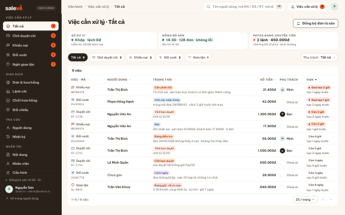
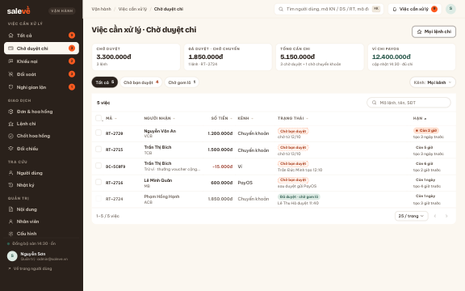
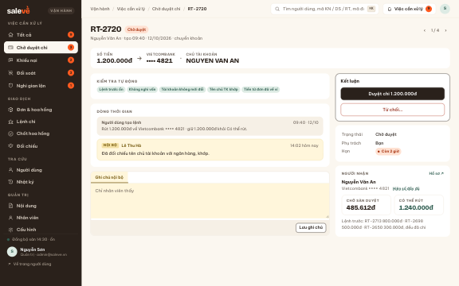
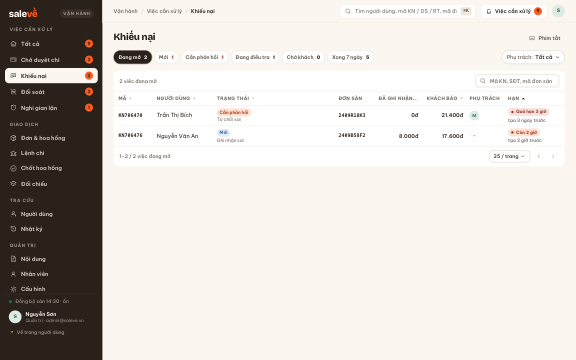
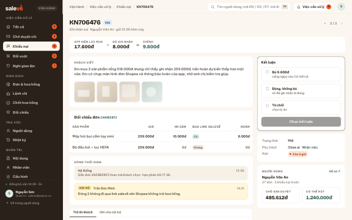
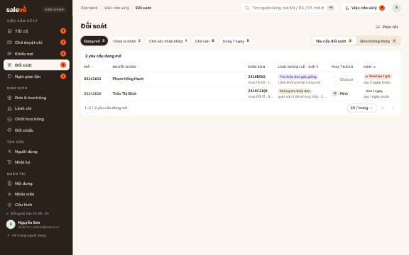
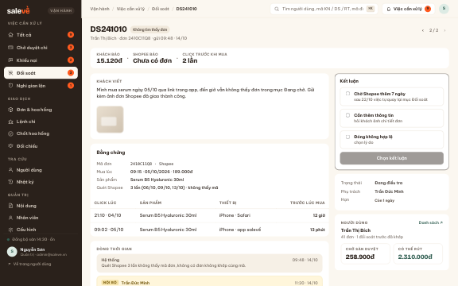
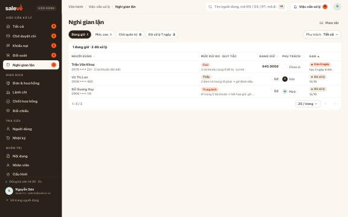
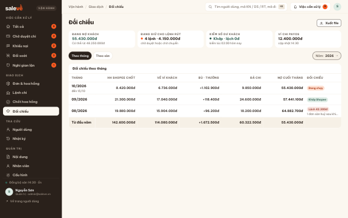
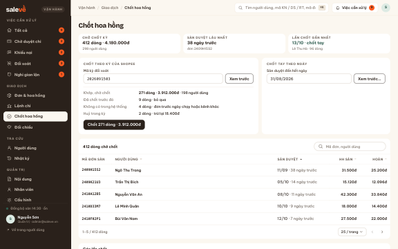
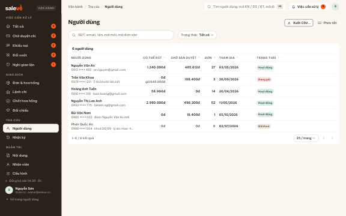
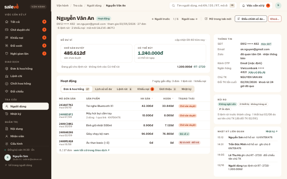
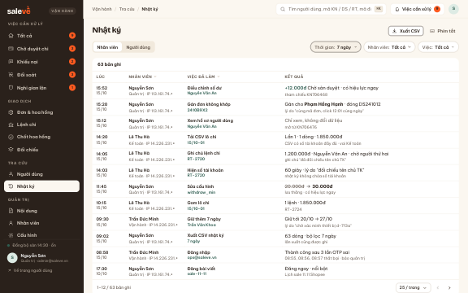
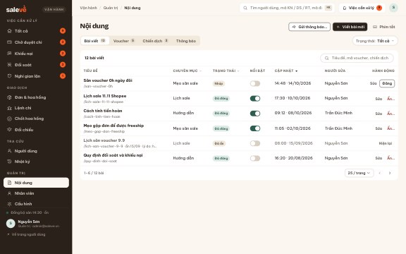
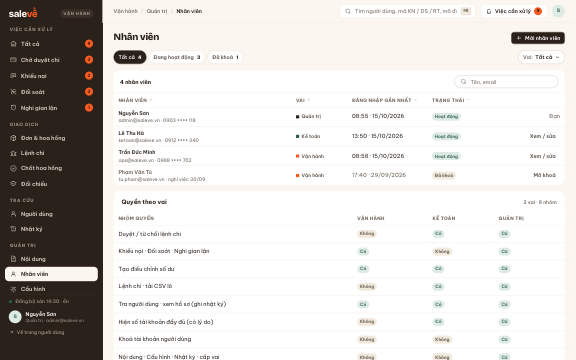
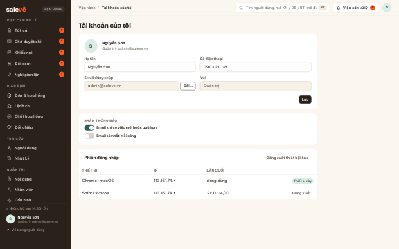
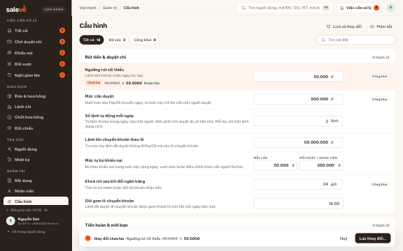